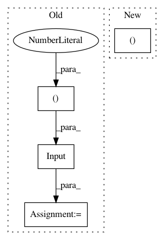

c3eb62763fcc5029c26b025ba1b60d7788d491a1,tests/test_model_saving.py,,test_model_saving_to_pre_created_h5py_file,#,140
Before Change
def test_model_saving_to_pre_created_h5py_file():
inputs = Input(shape=(3,))
x = Dense(2)(inputs)
outputs = Dense(3)(x)
model = Model(inputs, outputs)
model.compile(loss=losses.MSE,
optimizer=optimizers.Adam(),
metrics=[metrics.categorical_accuracy])
x = np.random.random((1, 3))
After Change
def test_model_saving_to_pre_created_h5py_file():
model, x = _get_sample_model_and_input()
out = model.predict(x)
_, fname = tempfile.mkstemp(".h5")
In pattern: SUPERPATTERN
Frequency: 3
Non-data size: 4
Instances
Project Name: keras-team/keras
Commit Name: c3eb62763fcc5029c26b025ba1b60d7788d491a1
Time: 2019-03-30
Author: andhus@kth.se
File Name: tests/test_model_saving.py
Class Name:
Method Name: test_model_saving_to_pre_created_h5py_file
Project Name: shenweichen/DeepCTR
Commit Name: e7bfb58ab7795bca341cbd0a763f6ec200f6315e
Time: 2019-02-17
Author: wcshen1994@163.com
File Name: deepctr/models/din.py
Class Name:
Method Name: get_input
Project Name: keras-team/keras
Commit Name: c3eb62763fcc5029c26b025ba1b60d7788d491a1
Time: 2019-03-30
Author: andhus@kth.se
File Name: tests/test_model_saving.py
Class Name:
Method Name: test_functional_model_saving